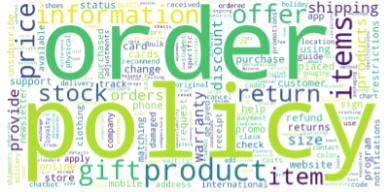
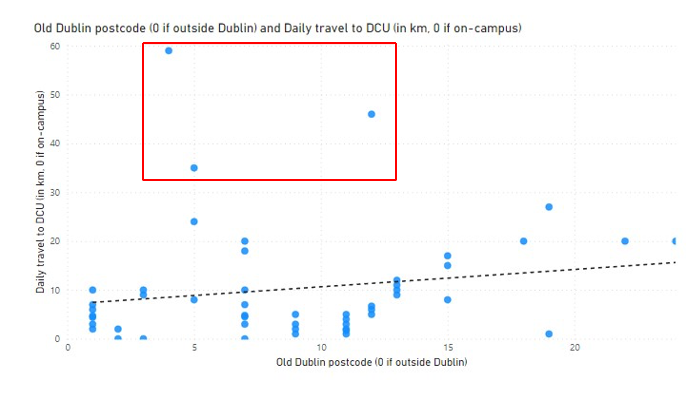

I am a Global Business student majoring in Data Analytics. On this page you can find projects I have worked on during my degree. I am skilled in Python, R, SQL and Power BI.
This portfolio contains a collection of various projects I did within my studies majoring in Data Analytics. They range from topics like energy and emissions to customer segmentation and were completed with Python, Excel, R, SQL and Power BI. On this page, you will find a summary of the main findings of the analyses. For an extensive insight into the code and the full reports, clicking onto the specific projects will bring you directly to each project's repository on GitHub.
The Apple Quality Assessment project utilizes a predictive model to enhance apple sorting processes by assessing their quality based on multiple physical and chemical characteristics. This innovation not only streamlines agribusiness operations but also boosts consumer satisfaction and strengthens brand reputation.
Data Description
Data was sourced from quality control data from kaggle, covering thousands of apple samples with attributes like color, weight, acidity, and sugar content. Extensive preprocessing techniques such as missing value imputation, categorical variable encoding, and normalization were applied to prepare the data for analysis.
Analysis and Insights
Descriptive analytics confirmed a well-distributed dataset across various apple quality categories, with key features including sugar content and acidity playing pivotal roles in quality prediction.
Visual tools, including confusion matrices and PCA scatter plots, illustrated the data's complexity and feature interrelations.
Model Descriptions
The project leveraged Random Forest and K-Means clustering algorithms. Random Forest was chosen for its robustness in handling complex, non-linear data sets, while K-Means helped explore underlying data groupings, enhancing the understanding of apple quality divisions.
Results
The models demonstrated high accuracy, with Random Forest achieving significant precision and recall in quality prediction. These outcomes highlight the models' effectiveness in classifying apple quality efficiently.
The report on "Natural Language Processing (NLP) for Chatbots" explores how keyword extraction, particularly through the TF-IDF algorithm, enhances customer service efficiency in the digital era. By automating interactions and improving response quality, this implementation aims to streamline operations and enhance customer engagement without escalating human labor costs, thus offering substantial business value.
Data Description
The analysis is based on textual data from customer service interactions across various industries. The focus is on extracting keywords that are critical for understanding customer queries and improving chatbot interactions. Data cleaning and feature engineering are emphasized to prepare the data for effective NLP application.
Analysis and Insights
The report finds that NLP, through mechanisms like the TF-IDF algorithm, significantly aids in managing and responding to customer queries by identifying key terms and phrases that are crucial for the chatbot's response accuracy. This allows for handling a higher volume of inquiries with promptness and relevance, enhancing overall customer service efficiency.
Visualizations
Visual aids in the report include word clouds that compare the impact of the TF-IDF algorithm on keyword significance in customer service texts. These visualizations clearly demonstrate the algorithm’s effectiveness in highlighting relevant keywords that are crucial for understanding customer intentions and improving automated responses.
Wordcloud Without Processing

Wordcloud With TF-IDF
Model Description
The TF-IDF (Term Frequency-Inverse Document Frequency) model is described as an effective tool for keyword extraction in text processing. It calculates the importance of a word based on its frequency in a single document relative to its frequency across all documents, which helps in prioritizing words that are unique and informative over common and less significant ones.
Results
The application of the TF-IDF model in chatbots significantly improves the interaction quality by enabling the chatbot to focus on important words and phrases. This targeted approach allows for more accurate and contextually relevant responses, enhancing the user experience and efficiency of customer service operations.
Conclusion and Recommendations
The integration of NLP in customer service, particularly through TF-IDF, shows promise in transforming customer interaction frameworks. The report concludes with a recommendation to further explore advanced NLP techniques and continuous model training to address the nuances and complexities of human language, which will improve the reliability and adaptability of NLP applications in customer service environments.
The "G20 Energy and Sustainability Analysis" project utilized Power BI to develop an interactive report on environmental data from G20 countries. This initiative aimed to provide insights into energy use, pollution levels, renewable energy adoption, and overall sustainability practices across these nations, facilitating better policy decisions and awareness regarding global environmental impacts.
Data Description
The raw data, sourced from the World Bank, consisted of numerous environmental metrics such as CO2 emissions, methane emissions, renewable energy consumption, and pollution levels from the G20 countries covering the period from 1990 to 2022. This dataset underwent extensive cleaning, normalization, and transformation to ensure accurate and insightful visualizations.
Analysis and Insights
The analysis highlighted significant findings including stagnant per capita CO2 emissions among G20 countries since 1990, a slight rise in overall energy consumption, and varying renewable energy adoption rates. Developed countries showed higher per capita emissions while emerging nations had higher total emissions, indicating differing environmental impacts and sustainability challenges.
Visualizations
The Power BI report featured dynamic visualizations that allowed users to explore data across multiple dimensions, including time series analysis of emissions, comparative renewable energy usage, and pollution metrics across different countries. Interactive elements in the report enabled stakeholders to drill down into specific data points for more detailed insights.
G20 Energy and Sustainability OverviewRenewable Energy Across the G20 nations
Results
The visualizations revealed a complex picture of environmental efforts and challenges within the G20. While some countries made significant strides in reducing pollution and increasing renewable energy use, others lagged, reflecting the diverse economic and policy landscapes across these nations.
The project focused on cleansing and analyzing survey data collected from students at a university, intended to profile an "imaginary friend." The objective was to process and clean the raw survey data, impute missing values, and draw meaningful insights about the student demographics and characteristics. The value of this project lies in improving data accuracy and providing reliable data for further academic studies and administrative use.
Data Description
The dataset comprised survey responses from students, covering various demographic and personal attributes such as age, exam results, commuting distance, and more. The data also included personality traits gathered through a separate survey. Missing data points were addressed using regression techniques in Microsoft Excel, particularly focusing on variables with potential predictive relationships.
Analysis and Insights
The project's analysis involved imputing missing values using statistical methods such as regression analysis, where relationships between independent variables like siblings' age and dependent variables such as the student's age were explored. This step was crucial to maintaining the integrity and usefulness of the data for subsequent analyses.
Visualizations and Results
Visual insights were generated using Power BI, providing interactive visualizations that helped identify and interpret data trends and anomalies. The analysis highlighted outliers and unusual patterns, such as unexpectedly high or low CAO scores and discrepancies in commuting distances that could indicate data entry errors or unusual individual circumstances.

Conclusion
The cleaned and analyzed data provides a more accurate and detailed view of the student body, useful for both academic and administrative purposes. The project underscored the importance of thorough data cleaning and the need for careful consideration of the methods used to impute missing values. Recommendations include the continued use of advanced analytical tools to enhance the quality of data collected and maintained by educational institutions.
The Bookstore Database Management project focuses on structuring and manipulating a relational database tailored for an online bookstore. This database is designed to track customers, book inventories, and order details, facilitating efficient management and enhancing customer service capabilities. The robust SQL setup allows for real-time insights into sales trends, customer preferences, and inventory management.
Data Description
Data is constructed within three primary tables: customers, books, and orders. Each table is populated with representative data:
The customers table includes entries featuring customer details such as name, email, and address.
The books table holds diverse entries covering various genres like Fantasy, Dystopian, and Literature, with titles ranging from classic literature to modern biographies.
The orders table interlinks customers and books, reflecting purchasing patterns through multiple order entries, including book IDs, customer IDs, quantities, and order dates.
Analysis and Insights
The SQL queries provide dynamic analysis capabilities:
Product-based queries identify books under a specific price threshold or books that have not yet been ordered.
Customer-based insights reveal ordering patterns, highlighting frequent buyers or those purchasing multiple books in a single transaction.
Time-sensitive queries retrieve orders within specific date ranges, facilitating seasonal analysis and marketing strategies.
Operational Commands and Manipulations
Operational commands within the project allow for real-time data updates, including:
Adding new entries to the customers and books tables.
Adjusting book prices and order quantities, ensuring the database reflects current market conditions and stock levels.
Comprehensive deletion commands prepare the system for clean-ups or restructuring, like removing data entries without corresponding transactions.
Results
This SQL implementation enhances operational efficiency and customer relationship management within the bookstore context. It allows for swift adjustments to the database in response to business needs, ensuring data integrity and relevance. The flexible query structure also supports detailed reporting and strategic decision-making, pivotal for maintaining competitive advantage in the retail book industry.
The Customer Segmentation Analysis project harnesses the power of R programming to delve into a rich dataset, enabling precise marketing strategies by grouping customers based on key characteristics. This analytical approach not only optimizes marketing efforts but also enhances customer engagement and satisfaction, thereby strengthening brand loyalty.
Data Description
Data was sourced from an internal customer database, encompassing over 15,000 customer entries with attributes like age, gender, annual income, and spending score. Rigorous preprocessing methods such as data cleaning, normalization, and transformation were applied to ensure the data was primed for analysis.
Analysis and Insights
Initial explorations of the data revealed diverse distributions in customer demographics and behaviors. Key attributes such as annual income, gender and spending score were identified as crucial for segmenting customers into meaningful groups.
Advanced visualizations, including scatter plots and histograms, showcased the relationships and distributions of these pivotal attributes.
Model Descriptions
The project utilized the K-Means clustering algorithm, renowned for its efficiency in identifying clusters within large datasets. The optimal number of clusters was determined using the elbow method, ensuring the most meaningful customer grouping.
Results
The clustering model effectively segmented the customer base into four distinct groups, each characterized by unique spending behaviors and income levels. These insights could directly be used for targeted marketing campaigns, leading to improved customer retention and higher conversion rates.